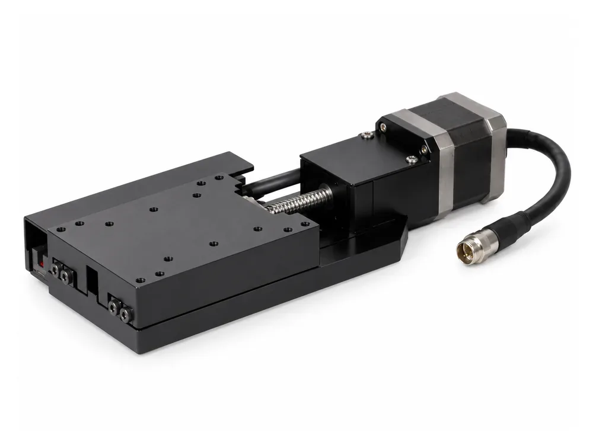
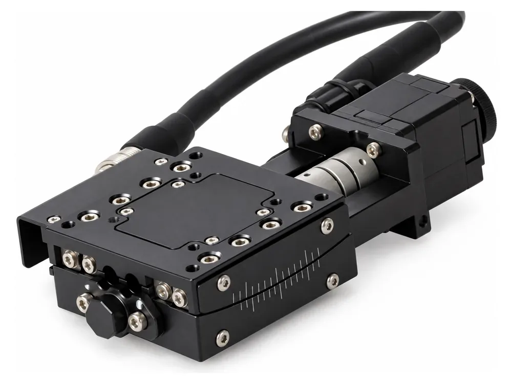
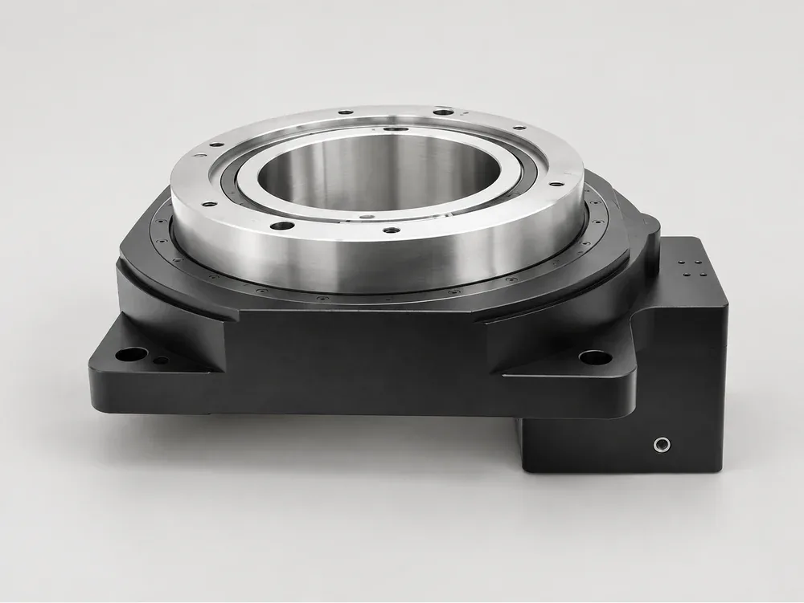

Six Series, 62 Models: An Overview of the positioningstages.com Motorized Stage Catalogue
positioningstages.com organises 62 standard motorized stages into six series, from a 25 mm bench translator up to a 200 kg lift platform. Each series answers a different motion question, so knowing the map saves time before any detailed selection. This overview summarises each series with its published ranges and a representative model, then shows how to move from series to shortlist.

Motorized linear stages: 17 models
Ball-screw single-axis translation on crossed-roller or linear-ball guides, driven by open-loop steppers. Travel is 15 to 50 mm in total and payload 3 to 20 kg. Representative entries: CYGXN60-0601-20-28 with ±0.3 µm repeatability, 5 µm accuracy and 5 kg; the compact CYDX28-0601-15-28 at ±2 µm; CYDG28-0601-25-28 with a φ25 round table; and CYGX80-0802-50-42 with 50 mm travel, an 80×100 mm table and 20 kg. Eleven of the seventeen are printed as half ranges in the source catalogue and shown as totals on the site. See the linear stage series.
Goniometer stages: 8 models
CYDAV60 and CYDAV80 stages swing the part through an arc about a centre above the table, for tilt without translating the part. Centre heights are 50, 75, 100 and 125 mm, each ±0.2 mm; arcs run from ±8.5° to ±4°; repeatability is ±0.002°; load is 5 kg on the 60 frame and 7 kg on the 80. Guides are crossed roller; the motor is not stated. See the goniometer series.

Vertical lift stages: 9 models
Z-axis lift tables and scissor lifts with 6 to 100 mm travel and 3 to 200 kg loads. CYZS40 offers 6 mm and 3 kg on a 40 mm frame; CYAZ120-180-100-57 lifts 100 mm at ±20 µm with 23 kg; CYAZ280 carries 100 kg; and CYAZ510-2505-20-750W is a 510×371 mm platform rated at 200 kg. Power-off holding is not stated. See the vertical lift series.
Rotary stages: 10 models
Two mechanisms in one series: ball-screw limited-arc stages at ±0.002–0.003° and continuous 360° worm-gear stages at ±0.005°, with ±0.01° backlash and 4 to 55 kg loads. CYDRA100-360-42 has a 42-frame stepper, 180:1 worm, built-in origin, φ100 table and 15 kg centre load. See the rotary series.
Multi-axis stages: 9 assemblies
XY, XZ, Xθ, XYθ and XYZ assemblies from 3 to 25 kg, built and aligned at the works as one unit. CYDXY60-0801-25-42-R, for instance, gives 25 mm on X and Y, a φ60 table, ±1 µm repeatability and 7 kg with a 42-frame stepper. Stacked accuracy and orthogonality are marked Not confirmed. See the multi-axis series.
Hollow rotary tables: 9 models
CK cam indexing tables with a through bore, runout ±0.005 mm, ±5 arc-sec repeatability, ±0.5 arc-min indexing accuracy and tilt moment from 137 to 2500 N·m. CK130F-10 weighs 2.5 kg and lists 1090 N·m tilt moment and 8400 N radial and axial load. See the hollow rotary series.

From series to shortlist
Pick the series from the motion type, then compare models on total travel, payload with its basis, and the precision figure your process uses. The catalogue publishes source drawings for each model and labels every figure. Across all series six fields are Not confirmed: bidirectional repeatability, measurement standard, test temperature, load condition, vertical and moment load limit, and motor holding torque. The stage selector filters across every series at once, and the request-a-quote page linked below takes your requirements when you are ready. Drawings are optional on that form.
Comparison and alternative pages
Besides the series pages, the site publishes stage comparisons and pages that discuss alternatives to commonly specified third-party stages, plus a library of engineering guides covering selection, mechanical integration, motion control and accuracy verification. Those guides are written for integrators: they cover topics such as choosing XYZ stack order, homing and work offsets, settling-time definitions and incoming acceptance tests. They do not add products to the catalogue; the 62 standard models above are the published range.
Why the labelling matters for buyers
Most catalogues mix measured, normalised and assumed values without saying which is which. Here each value carries its basis, so a buyer can see at a glance which numbers are transcribed from the catalogue, which have been normalised, and which remain open. That makes a shortlist easier to defend, because every open item is visible before an order rather than discovered after delivery.
Frequently asked questions
How many models does the catalogue contain?
62 standard models in six series: 17 linear, 8 goniometer, 9 vertical lift, 10 rotary, 9 multi-axis and 9 hollow rotary.
Where do the specifications come from?
They are transcribed from the supplied 2026 catalogue and labelled Catalogue, Derived or Not confirmed.
Does every model have a drawing?
Each product page links a source drawing crop and the original catalogue page reference. Confirm the current revision before use.
Is there a tool to filter across all series?
Yes. The stage selector takes exact travel, payload and repeatability and separates published matches from models needing engineering confirmation.
Contact
Not sure which series fits? Describe the motion and load and we will point you to the right part of the catalogue. Email sales@deyivision.com or visit the positioningstages.com contact page.